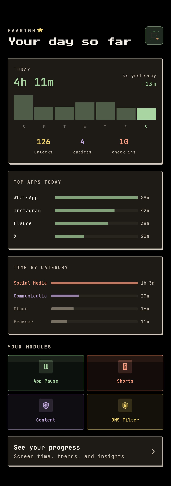
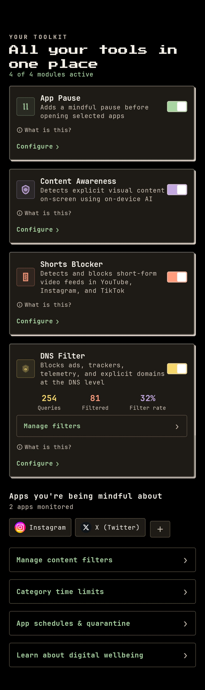
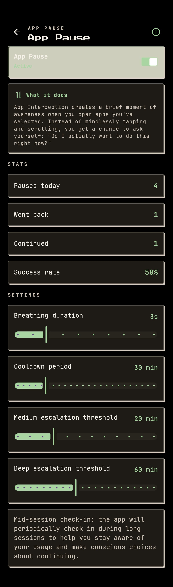
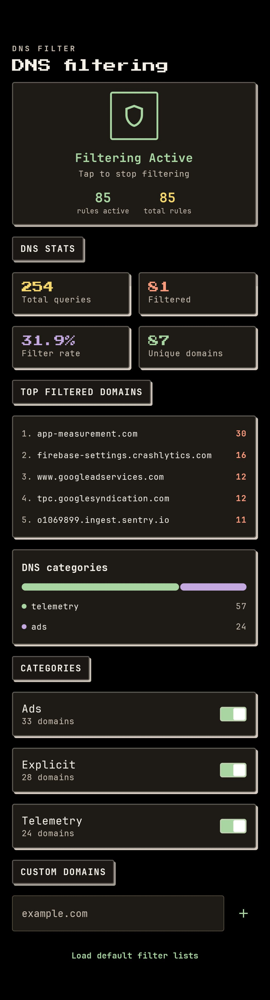
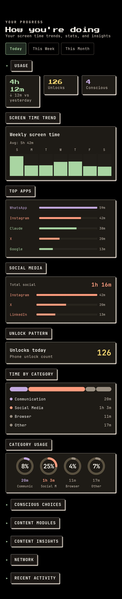

An Android app for using your phone with intention. Every intervention is a pause — never a block. No accounts, no servers, no tracking. Everything stays on your device.
Each module can be enabled independently. None of them block access — they create a deliberate pause. You always have the final choice.
When you open a monitored app, a brief intervention plays before the app loads. Four techniques available: Simple Pause, Physiological Sigh, Cognitive Defusion, and Urge Surfing. You configure which apps and which technique.
Detects YouTube Shorts, Instagram Reels, and TikTok via the Accessibility Service. When you land in a short-form feed, the app gently redirects you. You can return immediately — the redirect is a pause, not a wall. No content is blocked.
A quantized TensorFlow Lite model detects explicit images on screen. The model runs entirely on-device. No frames, metadata, or results are ever transmitted anywhere. No internet connection is required for this feature.
Blocks ads, trackers, and telemetry at the DNS level using a local VPN. Your traffic is not routed through any external server — queries are intercepted and resolved on your device. Works across all apps system-wide.
Most digital wellbeing tools are built on restriction — usage limits, app locks, screen time caps. Faarigh is built on deliberation. A two-second pause before you open Twitter is not the same as being locked out of Twitter, and the research shows it works better.
"We found that a minimal two-second friction — a single screen before the target app launched — reduced mindless opens by 57% over four weeks, with no increase in frustration or app abandonment."
Holte, Ward, Oulasvirta, Kim — PNAS, 2023 (One Sec study)Dark theme, grid paper texture, monospace type, pixel-art accents. No dark patterns — just clean design.





These are not policies — they are technical facts you can verify in the source code.
All data — usage logs, intervention history, DNS query logs — is stored in a local Room database. Nothing is synced or backed up.
The NSFW detector, app interception, shorts blocker, and DNS filter all work with no internet connection. No INTERNET permission is used for these.
The DNS VPN intercepts queries on the loopback interface. Your traffic is not routed through any external server or proxy.
The TFLite NSFW model runs on your CPU. No frames are extracted, stored, or transmitted. Inference is local and ephemeral.
There is no sign-up, no login, no email address, no phone number. The app has no concept of a user account.
No analytics SDK, no crash reporter, no event tracking. The app does not phone home under any circumstances.
No Google Play Services, Firebase, or any Google SDK dependency. The app functions on de-Googled Android distributions.
There are no backend servers, APIs, or cloud services associated with this app. There is nothing to breach.
Faarigh is distributed as a direct APK — no Play Store required. Requires Android 8.0 (API 26) or later.
Go to Settings > Apps > Special app access > Install unknown apps. Enable it for your browser or file manager.
Download app-release.apk from the GitHub releases page directly on your device, or transfer it via USB.
Open the downloaded file from your notification shade or file manager. Tap Install.
The app will walk you through granting Accessibility Service access and Overlay permission. Both are required for the core features to work.
When installing an APK outside the Play Store, Android shows: "This app was not verified by Google Play." This means Google has not reviewed this specific APK — it does not mean the app is malicious. Because Faarigh is fully open source, you can review every line of code before installing. To proceed: tap More details then Install anyway.
F-Droid listing is planned. ADB install:
adb install -r app-release.apk